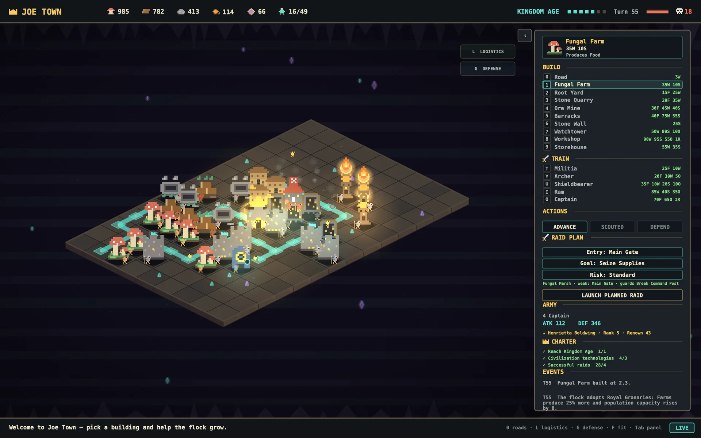

TEN CHARTERS
Civic goals, not grind.
One charter per age: connect your producers, serve them from storehouses, raise skilled Joes, protect your people. Complete one and the next age unlocks — with a town-wide celebration every Joe remembers.
A PREMIUM CIVILIZATION EPIC FOR MAC
From the Stone Age to the stars, guide a living flock through ten ages of roads, production, diplomacy, memories, and legends.
$9.99 ONCE · NO ADS · NO TRACKING · PLAYS OFFLINE · MACOS 14+

0
AGES
0
BUILDINGS
0
JOE SKILLS
0
TECHNOLOGIES
0
CIVILIZATIONS
0
ADS
01 THE LONG CLIMB
Every age is earned — complete the charter, gather the relics, and watch your capital redraw itself. New materials, new wardrobe, new machines. Same chickens.
AGE 5 OF 10 · SWIPE THROUGH THE JOURNEY →

Brick arches and glass. Officers drill, granaries rise, and the chronicle thickens.
02 THE FLOCK, INDIVIDUALLY
No anonymous worker dots. Each chicken has a name, personality, work guidance, growing skills, friendships, memories — and an opinion about your management.
★ ENZO
FOREMAN · CRAFTY · DILIGENT
“Learned Farming. Earned a promotion. Saw a petition through.”
PIN A FAVORITE JOE — THEIR STORY STAYS EASY TO FIND
A DIFFERENT CAST EVERY SEED
Your first flock arrives with stable identities and a seeded seat order. New Joes join as housing grows, giving every town a roster with its own history.
PERSONALITY YOU CAN WATCH
Earnest, Crafty, Bold, Dreamy, and Grumpy Joes react differently in the town. Long careers can also leave earned traits such as Calloused, Path-Worn, or Old-Timer.
GROWTH THAT STICKS
Assignments grow Farming, Craftsmanship, Logistics, Exploration, or Guardianship experience. Workers can become Foremen, Stewards, and Elders without turning Joes into disposable stat blocks.
A TOWN THAT REMEMBERS
The Flock Chronicle gathers campaign milestones, town events, civic projects, Joe memories, and notable lives from each realm's saved history.
03 EVERY AGE IS EARNED
No idle timers, no energy meters. Advancement means completing charters — civic goals that make your town measurably, visibly better.
TEN CHARTERS
One charter per age: connect your producers, serve them from storehouses, raise skilled Joes, protect your people. Complete one and the next age unlocks — with a town-wide celebration every Joe remembers.
SIX MILESTONES
Gather the Basics. Establish Storage. Found a Community. Start Industry. Era milestones walk your flock from Primitive survival — a suspicious amount of improvisation — to Early Industrial noise.
THE ASCENDANT LEGACY
Build the Starport, adopt nine technologies, explore most of the world, and secure two alliances. Complete the Space Legacy and the flock's full journey is stamped into the chronicle.
EIGHTEEN TECHNOLOGIES, TWO PER AGE FROM TOWN TO SPACE — FERTILE COMMONS OR MASTER MASONS? STELLAR SYNTHESIS OR GUARDIAN CONSTELLATION?
04 ECONOMY IS STRATEGY
Every military decision starts with a road, a cart, and a chicken with a job.
LOGISTICS
Paint roads and watch carts haul real cargo along them. Connected producers earn full output; storehouse routes and workshop adjacency push it to 150%. Exposed roads, meanwhile, are an invitation.
DOCTRINES
Eighteen permanent technologies, two per age from Town to Space. Granaries or garrisons, autonomous logistics or orbital defense — each choice shapes the civilization your flock becomes.
TACTICS
Read the rival's terrain, pick an entry, set your commitment — probe, standard, or all-in. The scouted weak point is worth +14 attack. The guarded gate will cost you dearly.
DEFENSE
Counter-raids arrive announced, three turns out. Walls, watchtowers, guarded roads, and where you put the storehouse decide what survives the night.
REPLAYABILITY
Worlds, events, and founding Joes are deterministic — every campaign replays command-for-command. Master one seed, then roll another. No two play alike.
PERSISTENCE
The simulation continues offline, capped at 24 hours. Come back to a While You Were Away report — Joe stories first, then problems. No streaks, no guilt.
05 COMMAND
Reach the Crown Age, train your first Captain, and fate deals you one of four legends of the coop. They earn Renown on every deployment — and historians exaggerate everything.
“Meditations, but for sieges.”
“First through the Main Gate.”
“Small. Loud. Undefeated at dawn.”
“Chivalry isn't dead. It's armed.”
RENOWN — +3 RAID VICTORY · +2 SUCCESSFUL DEFENSE · +1 EVEN IN DEFEAT · FIVE RANKS, EACH SHARPENING RAIDS AND HARDENING YOUR WALLS
06 SUPPLY LINES
Commodities physically travel the roads you paint — as carts, on schedules. Break the road, break the bread.
CORN FIELD
Corn
MILL
Flour
BAKERY
Bread
FOOD MARKET
Meals
ROAD-CONNECTED 100% OUTPUT · STOREHOUSE-SERVED 125% · WORKSHOP-BOOSTED 150%
07 BEYOND YOUR WALLS
Scout a growing frontier and meet animal societies with their own favored resources and temperaments. Send envoys, trade, celebrate, ally—or make a very loud diplomatic mistake.
Mercantile neighbors who value food and a profitable road.
Proud builders with a particular interest in wood.
Proud stone-lovers who respect a careful approach.
GIFTS · ENVOYS · TRADE PACTS · FESTIVALS · JOINT EXPEDITIONS · ALLIANCES · WAR AND PEACE
ANCIENT CACHE
“Workers uncover a single relic in a sealed alcove.”
STRANGE OBJECT
“Something metallic lands near the northern road. Farmer Joe calls it bad sky corn.”
FIRE DISCOVERY
“A curious Joe discovers fire, then insists the smoke was planned.”
THE WORLD EXPANDS WITH EVERY AGE · LANDMARKS, CREATURES, RESOURCE CACHES, AND NEW CONTACTS WAIT BEYOND THE FOG
08 THE JOURNEY AHEAD — DEVELOPMENT DIRECTION
Joe Town already reaches the Space Age. Future updates will deepen the living civilization without discarding the town—and history—you built.
1.1 NOW
Joe continuity, visible corn logistics, bottleneck guidance, and the realm-specific Flock Chronicle.
NEXT
More physical production chains, buildings with real roles, and stronger casual automation.
LATER
Compact diorama, quiet background presence, and respectful at-a-glance town status.
VISION
Culture, government, deeper planets, and eventually the question of whether every world needs corn.
09 AFFECTIONATE SARCASM
The first Joes gathered beneath the mountain. Generations later, they still have notes.
“The worms seem unionized.”
— FARMER JOE
“I'm emotionally load-bearing.”
— THE MASONRY
“Sunlight sounds fictional.”
— THE MINES
“Precision through loud banging.”
— THE SMITHY
“My footnotes have footnotes.”
— THE ARCHIVES
“Nothing happened. Excellent shift.”
— THE WATCH
“Leadership is mostly sitting.”
— THE THRONE
“Every crate contains regret.”
— LOGISTICS
“We looked expensive to invade.”
— THE GARRISON
10 BUILT FOR YOUR ATTENTION
OBSERVE
Watch named Joes work, carry cargo, socialize, and react. The town remains readable before you open a single report.
SHAPE
Place roads and buildings, choose permanent technologies, guide Joes, resolve petitions, and decide who your civilization becomes.
OPTIMIZE
Inspect production, storage, routes, realm bonuses, ventures, guild choices, and a frontier that grows through ten ages.

11 QUESTIONS FROM THE COOP
Joe Town is $9.99 USD as a one-time purchase. No ads, no in-app purchases, no tracking — a premium game with premium manners.
Not directly — you shape the town, and the flock staffs it. Build a watchtower and a Scout moves in; raise a workshop and a Scholar arrives. Your job is to know them: inspect any Joe for their traits, skills, friendships, and memories, and Command-click to favorite the ones carrying your economy.
Yes — the Space Legacy is the full campaign-completion milestone, stamped into your chronicle after ten ages. A living town rarely feels finished, though, and future updates will deepen the civilization around it.
Entirely. Your town saves locally and the simulation even advances while you're away — capped at 24 hours, then reported back to you, Joe stories first.
macOS 14 or later, on Apple silicon and Intel. One universal download, 60 frames per second, from a 980×640 window up to full screen.
Some early charters ask the flock to prove itself in raids, but the wider world also supports gifts, envoys, trade pacts, festivals, alliances, and negotiated peace.
All that's missing is the civilization you build with them.
Buy Joe Town — $9.99